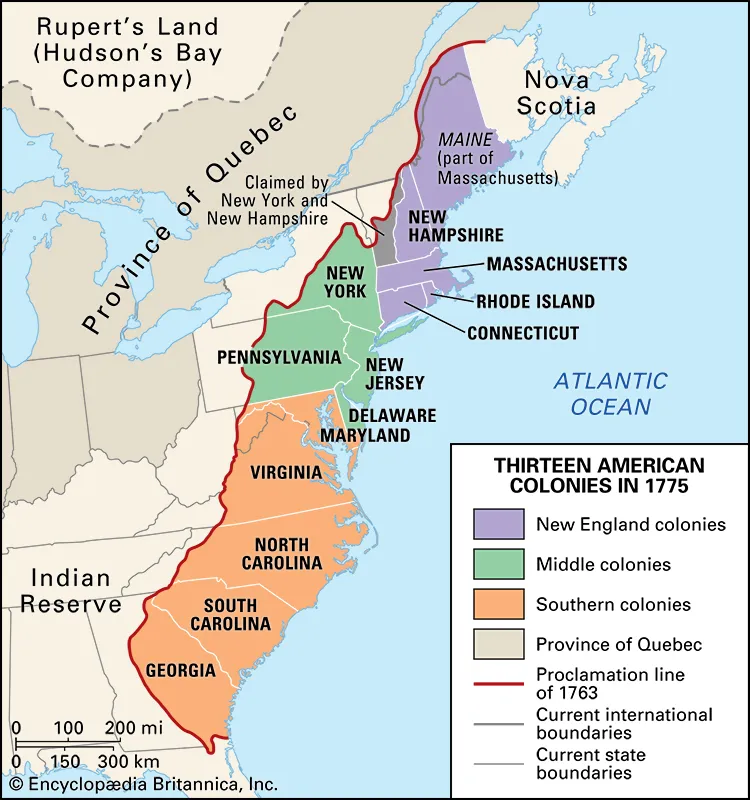
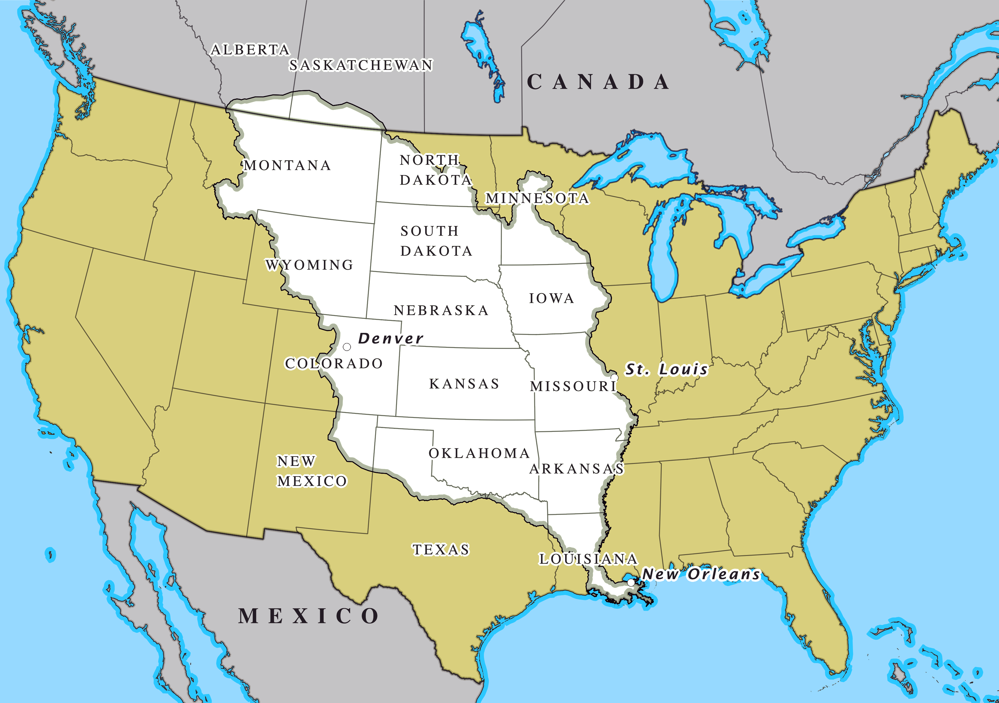
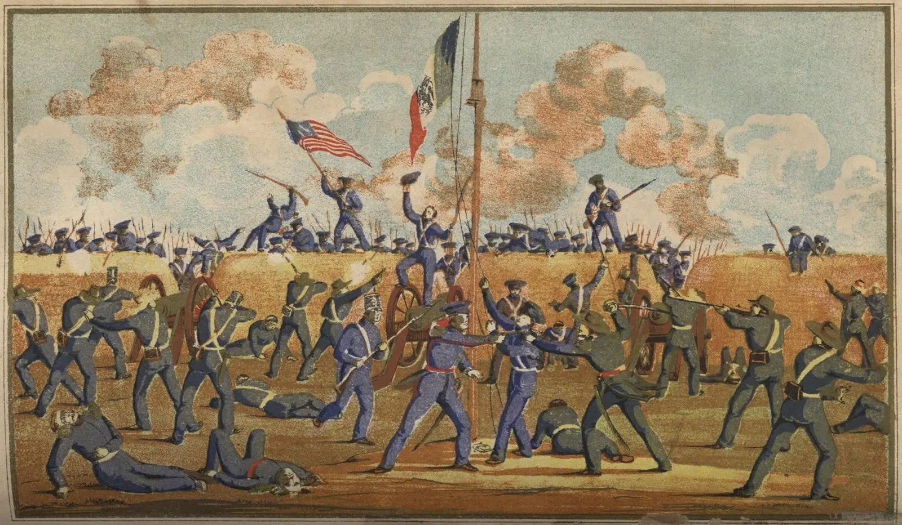

During the 17th and 18th centuries, there were thirteen British colonies on the Atlantic coast of North America. Grievances against the imperial government led the 13 colonies to begin uniting in 1774, and expelling British officials by 1775.
By 1800, states and territories of the United States used in the second census included Kentucky and Tennessee as well as the NorthWest territories and the territories of Indiana and Mississipi. In 1803, the United States acquired the louisiana territory from Spain fulfilling the concept of Manifest Destiny which further fueled westward migration, with pioneers and settlers moving across the Appalachian Mountains to settle areas like the Midwest, Great Plains, and eventually the West Coast. In 1804, the territory was divided into the Orleans Territory and the Louisiana District. The territoty of Orleans was admitted into the Union as the state of Louisiana in 1812. To avoid confusion, the northern part of Louisiana territory was renamed Missouri Territory.The Louisiana purchase doubled the size of the United states.
In 1821, the Adams-Onis Treaty between the US and new Spain aquired West Florida to the US setting a boundary between US and New Spain, now Mwxico. In 1846, the Oregon treaty between the United states and Britain was signed. Two years after, the US made Oregon a territory which included all of the present day states of Oregon, Washington, Idaho, and parts of Montana and Wyoming.
Texas was annexed from the Republic of Texas after it claimed independence from Mexico in 1836. This annexation occurred in 1845
The Treaty of Guadalupe, signed on February 2, 1848, ended the war between the United States and Mexico. By its terms, Mexico ceded 55% of its territory, including the present-day states California, Nevada, Utah, New Mexico, most of Arizona and Colorado, and parts of Oklahoma, Kansas, and Wyoming. This region was referred to as Mexican Cession. Mexican residents in the newly acquired territories were given the option to relocate within Mexico's new boundaries or to stay and become U.S. citizens
In 1854, the Gadsen Purchase saw the aquisition of present day southern Arizona and south Western New Mexico by the United States.
By 1866, part of the western half of the Indian Territory was claimed by the United states and later became Oklahoma territory in 1890.
In 1912, the United States officially had 48 states with the Addition of Arizona and New Mexico.